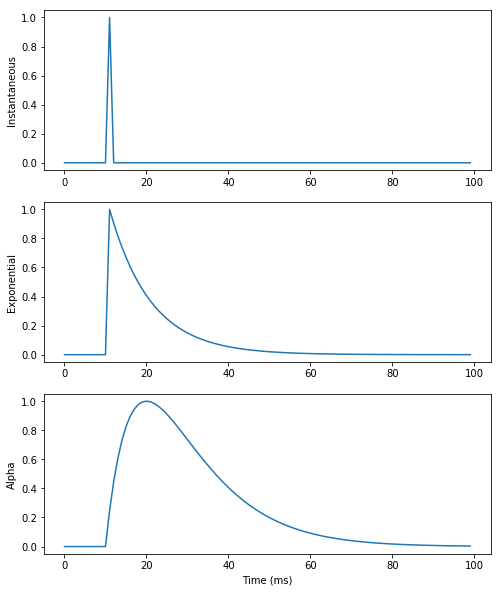

Spiking networks
Spiking neurons
Spiking neurons are defined with the same interface as rate-coded ones, but they must also define two additional fields:
spike: condition for emitting a spike (typically when the membrane potential exceeds a threshold).reset: what happens after a spike is emitted (at the start of the refractory period).
A refractory period in ms can also be specified.

Example of the Leaky Integrate-and-Fire:
C \, \frac{d v(t)}{dt} = - g_L \, (v(t) - V_L) + I(t)
\text{if} \; v(t) > V_T \; \text{emit a spike and reset.}
LIF = Neuron(
parameters = """
C = 200.
g_L = 10.
E_L = -70.
v_T = 0.
v_r = -58.
I = 0.25
""",
equations = """
C * dv/dt = g_L * (E_L - v) + I : init=E_L
""",
spike = "v >= v_T",
reset = "v = v_r",
refractory = 2.0
)Download the Jupyter notebook: AdEx.ipynb
Run it directly on colab: AdEx.ipynb
Conductances / currents
A pre-synaptic spike arriving to a spiking neuron increases the conductance/current g_target (e.g. g_exc or g_inh, depending on the projection).
LIF = Neuron(
parameters = "...",
equations = """
C*dv/dt = g_L*(E_L - v) + g_exc : init=E_L
""",
spike = "v >= v_T",
reset = "v = v_r",
refractory = 2.0
)Each spike increments instantaneously g_target from the synaptic efficiency w of the corresponding synapse.
g_target += w
For exponentially-decreasing or alpha-shaped synapses, ODEs have to be introduced for the conductance/current.
The exponential numerical method should be preferred, as integration is exact.
LIF = Neuron(
parameters = "...",
equations = """
C*dv/dt = g_L*(E_L - v) + g_exc : init=E_L
tau_exc * dg_exc/dt = - g_exc : exponential
""",
spike = "v >= v_T",
reset = "v = v_r",
refractory = 2.0
)Download the Jupyter notebook: SynapticTransmission.ipynb
Run it directly on colab: SynapticTransmission.ipynb
Download the Jupyter notebook: COBA.ipynb
Run it directly on colab: COBA.ipynb
Short-term plasticity (STP)
Spiking synapses can define a pre_spike field, defining what happens when a pre-synaptic spike arrives at the synapse.
g_target is an alias for the corresponding post-synaptic conductance: it will be replaced by g_exc or g_inh depending on how the synapse is used.
By default, a pre-synaptic spike increments the post-synaptic conductance from w: g_target += w
STP = Synapse(
parameters = """
tau_rec = 100.0 : projection
tau_facil = 0.01 : projection
U = 0.5
""",
equations = """
dx/dt = (1 - x)/tau_rec : init = 1.0, event-driven
du/dt = (U - u)/tau_facil : init = 0.5, event-driven
""",
pre_spike="""
g_target += w * u * x
x *= (1 - u)
u += U * (1 - u)
"""
)Spike-Timing Dependent plasticity (STDP)
post_spike similarly defines what happens when a post-synaptic spike is emitted. This can be used to implement the event-driven version of STDP using traces.
STDP = Synapse(
parameters = """
tau_plus = 20.0 : projection ; tau_minus = 20.0 : projection
A_plus = 0.01 : projection ; A_minus = 0.01 : projection
w_min = 0.0 : projection ; w_max = 1.0 : projection
""",
equations = """
tau_plus * dx/dt = -x : event-driven # pre-synaptic trace
tau_minus * dy/dt = -y : event-driven # post-synaptic trace
""",
pre_spike="""
g_target += w
x += A_plus * w_max
w = clip(w + y, w_min , w_max)
""",
post_spike="""
y -= A_minus * w_max
w = clip(w + x, w_min , w_max)
""")Download the Jupyter notebook: STDP.ipynb
Run it directly on colab: STDP.ipynb